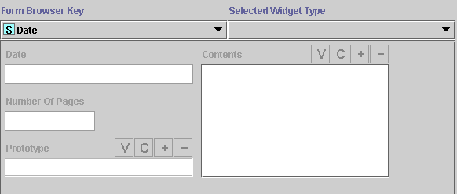

The Form Edit Pane shows the layout of the form associated to the selected class and allows you to edit the form's layout.
The Form Edit Pane has the following components:
In addition, double-clicking on the Form Edit Pane brings up a dialog box as follows:
If you have not created or modified the form, Protégé-2000 uses a default layout, as follows:
The example below shows the default form for Newspaper, which has 4 slots. There are 3 different slot-value types and both single and mutliple cardinality slots.

You can use the Form Edit Pane to design an interface which allows easy entry of the disparate types of information represented by the different types of slots.
There are a number of basic editing tools provided on the Form Edit Pane. Some of the actions you can perform with widgets are:
Moving widgets to a different location and/or resize them.
Hiding or redisplaying a widget.
Selecting a different type of widget from the Select Widget Type menu.
For widgets with buttons, choosing which buttons are displayed.
Note: It is also possible to create customized widgets using the programmer's interface.
You can also make changes to the global properties of the form, including:
Selecting a browser key, which is used to identify the different instances when they are displayed in a list.
Selecting a single widget that will expand to take up most of the form, rather than having all widgets resize proportionally.
Next: The Browser Key Menu